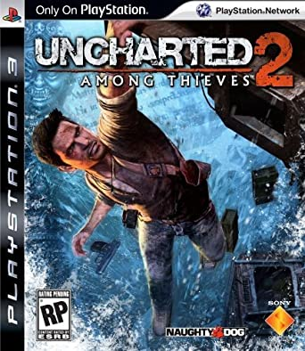
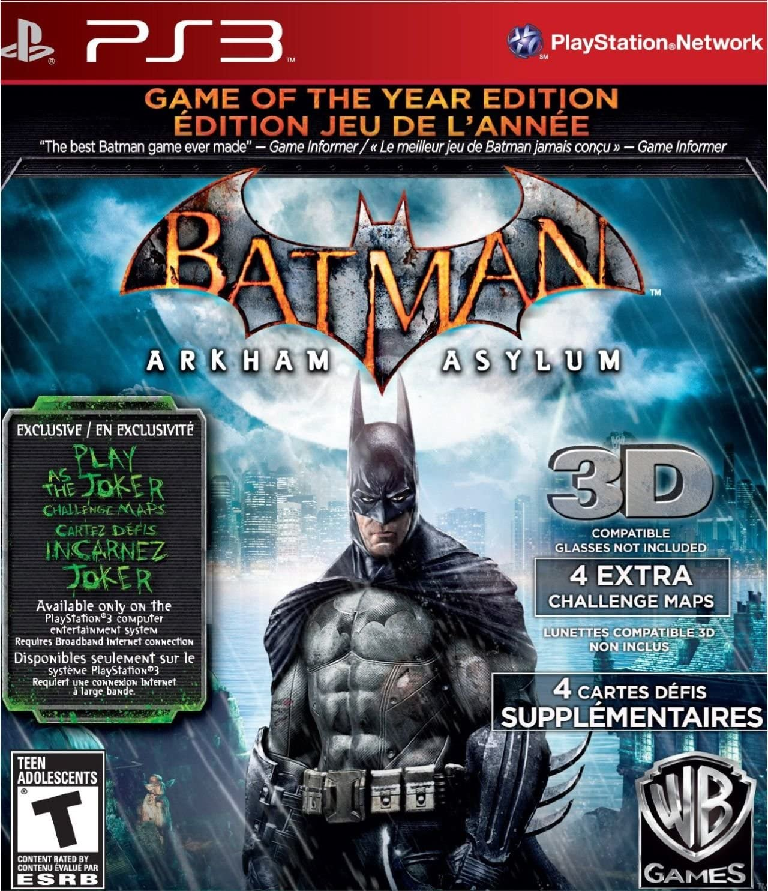

Video Game Central
About
Top 5 Playstation 3 Games According to Us
 Created by Naughty Dog and released on November 1, 2011, "Uncharted 3: Drake's Deception is the third installment in their Uncharted Series. It is an action adventure playstation exclusive game.The game follows Nathan Drake, the series protagonist, and his colleague, Victor Sullivan, through yet another histrocial adventure of trying to find another mythical city, Atlantis of the sands.Infofrom https://uncharted.fandom.com/wiki/Uncharted_3:_Drake%27s_Deception#Plot
Created by Naughty Dog and released on November 1, 2011, "Uncharted 3: Drake's Deception is the third installment in their Uncharted Series. It is an action adventure playstation exclusive game.The game follows Nathan Drake, the series protagonist, and his colleague, Victor Sullivan, through yet another histrocial adventure of trying to find another mythical city, Atlantis of the sands.Infofrom https://uncharted.fandom.com/wiki/Uncharted_3:_Drake%27s_Deception#Plot
 Uncharted 2 "Among Thieves" is the second installment of the Uncharted series created by Naughty Dog released in october of 2009. This action adventure game follows Nathan Drake and Chloe Frazier, who Drake meets during the game, as they search for the lost city of Shambhala and the Cintamani Stone.Info from https://uncharted.fandom.com/wiki/Uncharted_2:_Among_Thieves
 Uncharted "Drake's Fortune" is the first installment in Naughty Dog's Uncharted series released in November of 2007. It is an action adventure game that follows Nathan Drake, Elena Fisher, a documentary director, and Victor Sullivan who search for the city of El Dorado. Drake is the ancestor of Sir Francis Drake and wants to discover what his ancestor had attempted. Info from https://uncharted.fandom.com/wiki/Uncharted:_Drake%27s_Fortune#Synopsis
Uncharted "Drake's Fortune" is the first installment in Naughty Dog's Uncharted series released in November of 2007. It is an action adventure game that follows Nathan Drake, Elena Fisher, a documentary director, and Victor Sullivan who search for the city of El Dorado. Drake is the ancestor of Sir Francis Drake and wants to discover what his ancestor had attempted. Info from https://uncharted.fandom.com/wiki/Uncharted:_Drake%27s_Fortune#Synopsis
 "The Last of Us" is Naughty Dog's new series they started to develop after they had concluded Uncharted's trilogy, even though later they would develop a fourth game. It was released on June 14, 2013. "The Last of Us" is also a playstation exclusive game. It is a zombie apocalypse game that follows Joel, a middle aged man, and Ellie,a 14 year old girl, who Joel finds after his daughter had been killed. it is discovered that Ellie is immune to the zombie virus and Joel is suppose to deliever Ellie to the hospital where they will use her to find a cure. Info from https://thelastofus.fandom.com/wiki/The_Last_of_Us#Plot
"The Last of Us" is Naughty Dog's new series they started to develop after they had concluded Uncharted's trilogy, even though later they would develop a fourth game. It was released on June 14, 2013. "The Last of Us" is also a playstation exclusive game. It is a zombie apocalypse game that follows Joel, a middle aged man, and Ellie,a 14 year old girl, who Joel finds after his daughter had been killed. it is discovered that Ellie is immune to the zombie virus and Joel is suppose to deliever Ellie to the hospital where they will use her to find a cure. Info from https://thelastofus.fandom.com/wiki/The_Last_of_Us#Plot
Batman Arkham Asylum is an action adventure game where you play as Batman, Bruce Wayne. The game, released in 2009, begins with Joker who is brought to the Arkham Asylum island who then with the help of Harley Quinn breaks out all the convicts and takes control of the island. Batman tries to find out why and stop Joker.Infofromhttps://tvtropes.org/pmwiki/pmwiki.php/VideoGame/BatmanArkhamAsylum